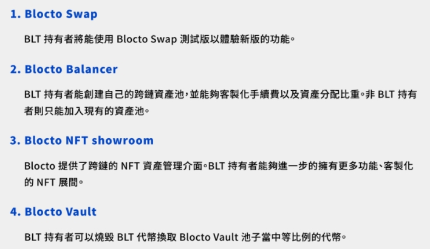

Blocto推薦碼目前還沒有任何獎勵優惠。
本篇整理了Blocto白皮書內容(Ver1.1/2021/04)
白皮書本書在此
其中分為一頁版簡報和完整的白皮書兩種。
以下內容為完整白皮書。👇
對於使用者
Blocto是一個跨區塊鏈的智能合約錢包服務平台。目標是使用者在去中心化應用、NFT之間使用上順暢，減少學習成本。
編輯碎念：智能合約錢包這件事情有點Tricky，安全性沒問題。但是當你想要轉出到外部時候要注意(eg. 其他交易所or其他錢包中)，目標地址接不接受"智能合約錢包"轉帳。但是只有智能合約錢包才有辦法達成跨鏈操作、Blocto協助處理後台程序等等。除了轉出問題，智能合約錢包很棒。
- Blocto點數，可以支付有支援的區塊鏈的交易費用(gas fee)。
- 對區塊鏈熟悉的用戶，也可以直接取得私鑰，將帳戶從"託管模式"轉為"非託管模式"
對於開發者
- 目前唯一支持Flow區塊鏈的手機錢包。
- Flow著名項目NBA Top Shot、MotoGP Ignition。
- Blocto運行著Flow節點，有超過70%代筆委託Blocto質押。同時是Flow中第四大節點運營商。
- 目前也獲得Solana和Serum的開發補助金。
Blocto錢包
現在支援Ethereum、Tron、Flow 和 Solana 區塊鏈。
編輯碎念：目前在官方宣傳片中有幣安智能鏈。可能會是將來的事。
支援法定貨幣購買加密貨幣。方便又安全。
編輯碎念：只要是方便的服務，手續費那是一定要的。
直接使用電子郵件登陸錢包，等到用戶使用熟悉後，也可以自主管理私鑰。
編輯：實際體驗真的不錯…我剛剛app更新，填了gmail進去後，去收信填驗證碼，立刻就登入了
未來會發布瀏覽器擴充錢包，讓使用者在電腦上的Google chrome、firefox可以直接與dApp互動。
SDK(軟體開發套件)，目前完成了Flow鏈的Web SDK，未來會繼續開發其他鏈上SDK。
與zkSync、Loopring 和xDai集成，將會推出本地端的layer 2資產管理和dApp互動功能。
Blocto代幣
BLT 持有者在使用 Blocto 旗下產品時將獲得額外優勢及好處:

BLT也可以作為手續費使用。
質押
BLT質押獎勵為總流通量5%，開發者、用戶皆能透過質押BLT在挖礦獲取收益。
初期質押獎勵比例較高，會逐步降低獎勵比例。
挖礦
25%的BLT會透過挖礦釋出。BLT代幣包含功能&治理。
開發者挖礦資格：
- 開發者無需質押即可整合 Blocto 相關之服務,欲挖礦者才需質押 BLT。
- 開發能與 Blocto 整合之 dApp 並質押 BLT 代幣,由 Blocto 團隊進行審核。
- 開發者能質押額外數量 BLT 代幣,以取得 Blocto 團隊技術相關協助。
用戶挖礦資格：
- 符合活躍用戶定義,包括推薦人數、交易總量等。
挖礦比例分配：
- 挖礦獎勵每月發放
- 獎勵可透過治理投票進行改更動
- 用戶可額外質押BLT，獲得最高3倍挖礦獎勵(編輯:目前未知)
代幣經濟
BLT總發行量：5億顆。
這是未來狀態，其中大部分的人的代幣鎖倉期各有不同。
創始狀態
初始發行量：3000萬顆(6%)。
挖礦獎勵1.25億顆(25%)。
目前的話，這個時間點應該是生態系統中的早期支持者、用戶空投。
關於代幣分配，後續我為找更多資料再寫一篇文。
產品
Blocto Swap
- Blocto Swap基本上是Fork了UniSwap。
- 之後會有Flow/FUSD交易對。(編輯:FUSD是Flow鏈上的穩定幣)
跨鏈交易Teleport
- 以太坊跨鏈Flow的交易對「USDT/tUSDT」，目前已累積1000萬美元交易量
- 合約當中的資金也可以用於與其他 DeFi合約結合，像是機槍池 Yearn.finance 或是借貸協議 Compound.finance。這些資產所獲得的收益將放入Blocto Vault
Blocto Balancer
跨鏈自動做市商協議。
BLT持有者能夠創建自己的跨鏈資產池，並能夠客製化手續費以及資產分配比重。(這段重點)
Blocto 拍賣行
Blocto Auction House，跨鏈NFT交易市場。無論當初NFT以哪種公鏈發行，都可以藉由Blocto購買。將鎖定在原生區塊鏈中,並取得一個佔位代幣 (placeholdertoken) 用來交易，交易後買家再以佔位代幣來申領原生區塊鏈中的 NFT。
Blocto Vault
生態系統中的去中心化收益共享資金池。其收益來自於旗下產品,包括Blocto Swap、Blocto Balancer,以及未來 Blocto評選、戰略合作的產品,皆會有部分收益以不同形式的代幣流入 Blocto Vault 當中。
編輯碎念：這段我必須誠實說沒有看很懂，不過這也是比較之後才會實現的功能。前面有提到在透過某些Defi獲得的收益會回流進Blocto Vault，我的理解是會有一部分能用BLT交換流進Vault裡的資產。
總結
以上👆為官方白皮書總結，我也來總結一下我的想法。
Blocto野心蠻大的，是一個想往世界舞台挑戰的團隊。
我個人是Blocto去年底開始的用戶，原先是區塊勢的Podcast節目認識李玄，另外在INSIDE專欄認識了台灣區塊鏈的過去歷史。
最後因為Flow和Blocto的深度合作，使用者可以加Flow質押在blocto換取更多收益，近期也因為MotoGp ignition的合作讓Blocto熱度上升。反而在台灣的熱度比較少，因為上面兩個都是國際化項目，中文資料也不多。台灣法規也很麻煩…
Blocto儘管年輕，但技術上我蠻有信心的，Dapper lab也是區塊鏈國際級玩家了，能和Dapper合作在Flow上做Swap，我相信可以證明其實力。
另外，關於優化使用者體驗也是整個區塊鏈行業目前迫切的需求。我隨便抓，現如今有80%看到加密貨幣的人會選擇完全袖手旁觀，剩下20%的人會嘗試進入中心化交易所將法幣轉換成加密貨幣，其中大概只有1%，敢將加密資產再轉到去中心化的地方，嘗試使用Staking、Add liquidity、質押等資產管理方式。在其中更小一部粉有辦法找到有趣的Dapp去持續使用。而Blocto就是要將這20%接受加密貨幣的使用者導入進Defi當中。我認為Blocto正好站在了這道浪上。
但是，這就代表Blocto一定能衝好這道浪嗎？我看到的是Blocto目標很大，但對於能否實現依然也抱持問號。不幸的是，在台灣也曾有很正規的項目卻翻車的事件。
還有Blocto想要協助使用者體驗，卻可能會讓使用者付出較多一點點的Gas Fee，這能不能被使用者接受，還有待考驗。
李玄很常出沒在Blocto的telegram當中疑難排解，偶爾也有團隊工程師看到用戶有難，直接跳出來當client engineer，覺得相當有趣。
另外還有一頁簡報在這裡，內容很短我就不再贅述。
官方資料：
社群